© Koomin
01
蓮蜻蛉模様
Lotus and Dragonfly Pattern
KB-004-01
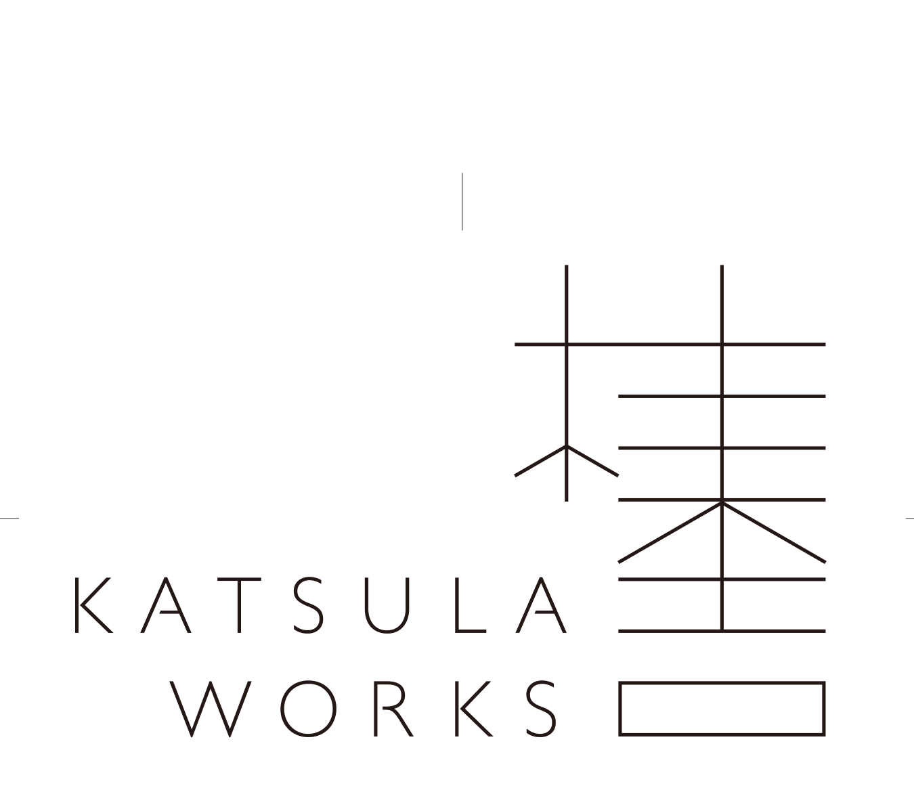
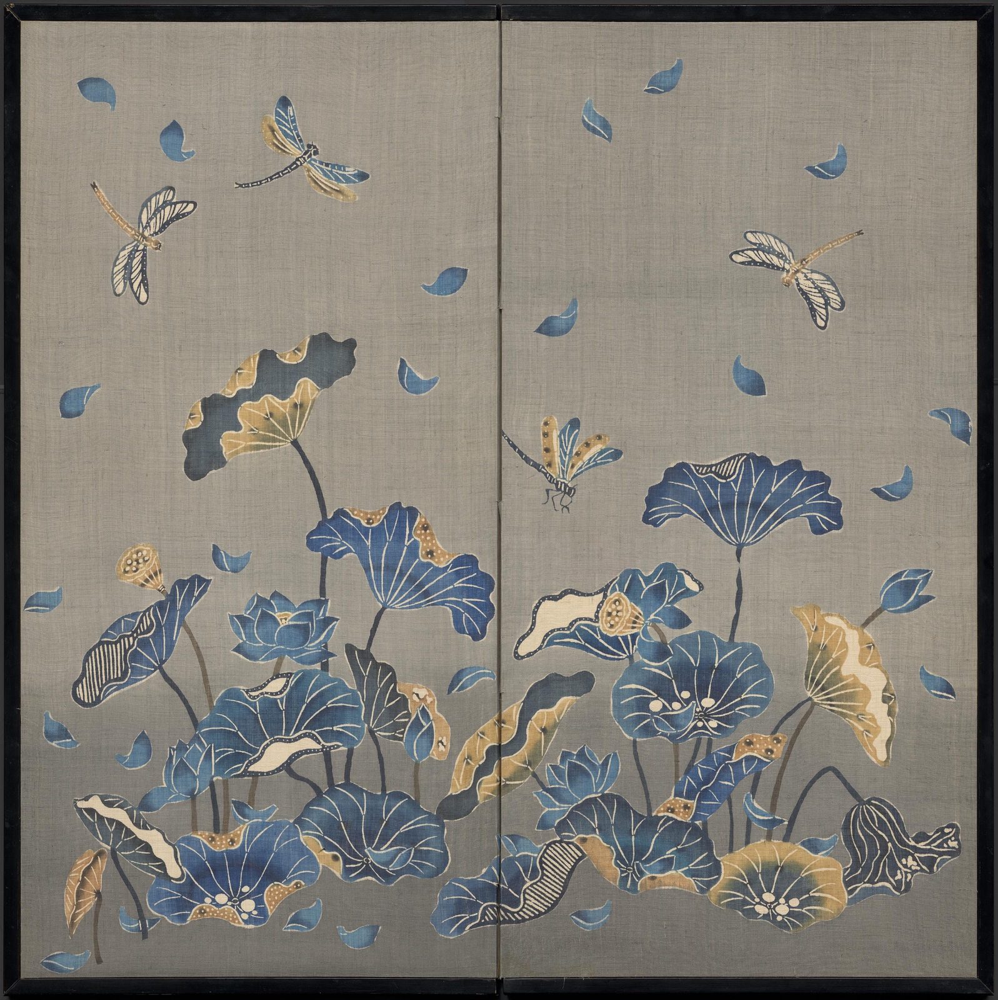
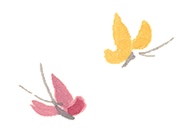
「Kumiko Nishikata — The Poetics of Pattern」の第1回となる本展では、西片玖美子の文様の世界を初めて訪れる方にも、その豊かさと魅力を感じていただけるよう、12点の作品を選びました。
For First Encounters, the opening exhibition in the series Kumiko Nishikata — The Poetics of Pattern, we have selected twelve works that offer an introduction to the richness and diversity of Nishikata’s creative world, especially for those encountering her patterns for the first time.
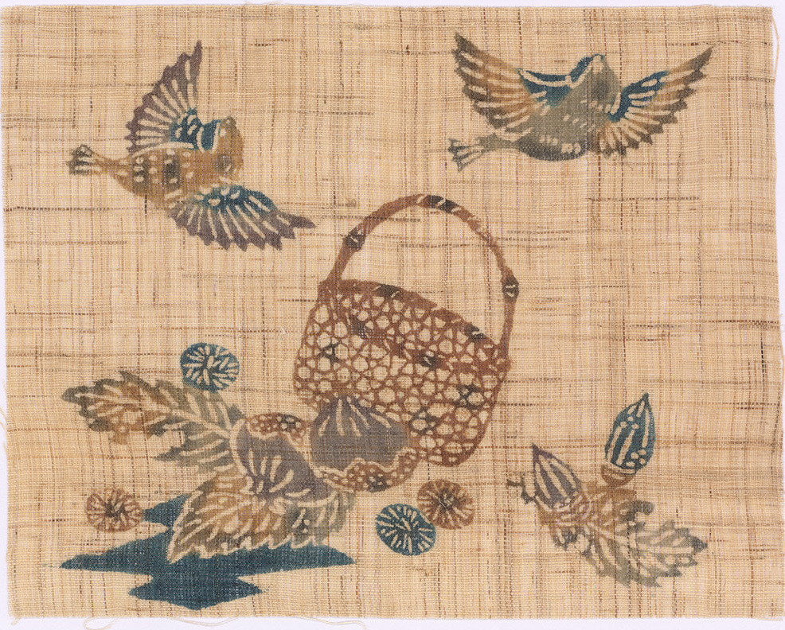
© Koomin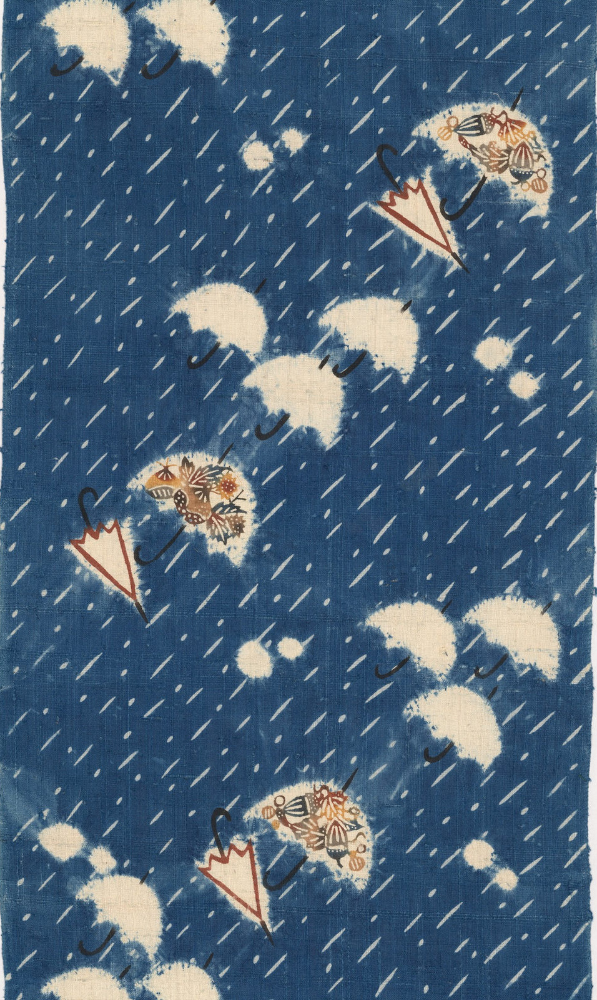
© Koomin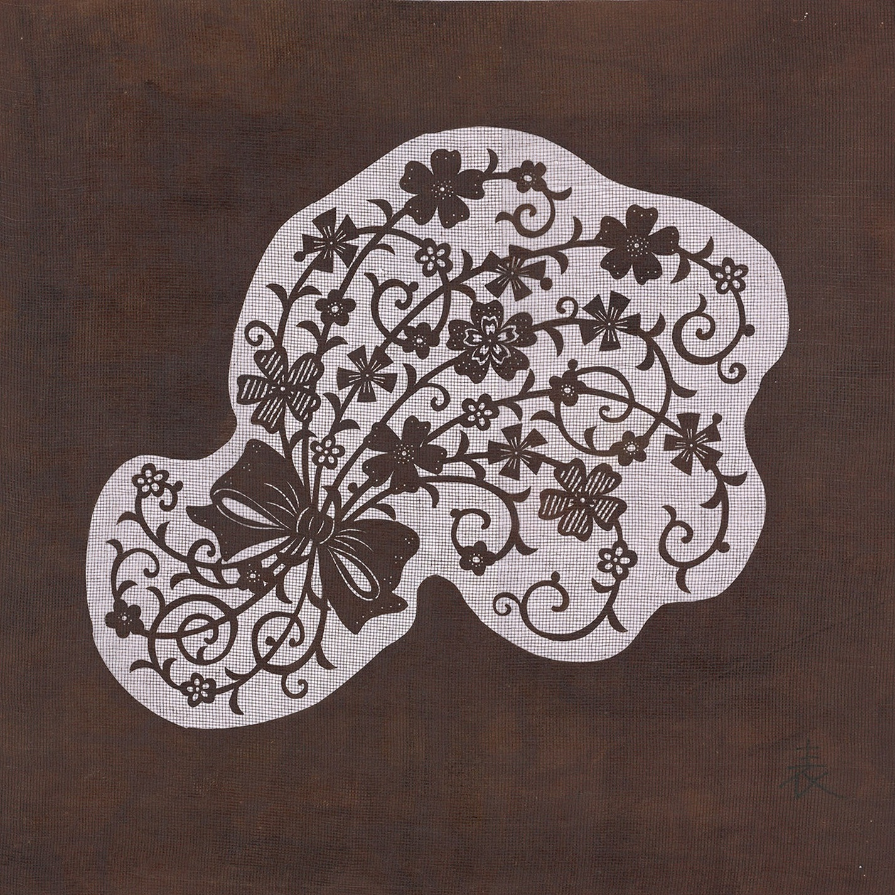
© Koomin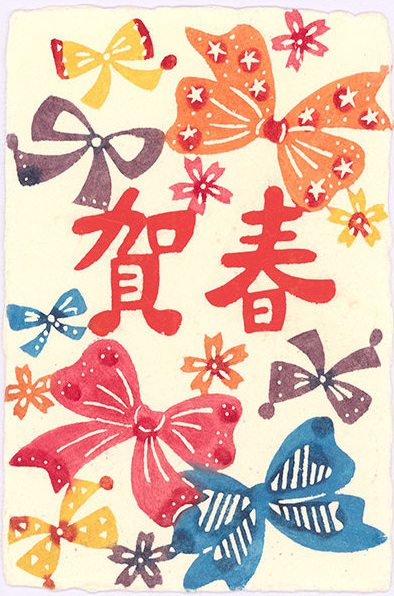
© Koomin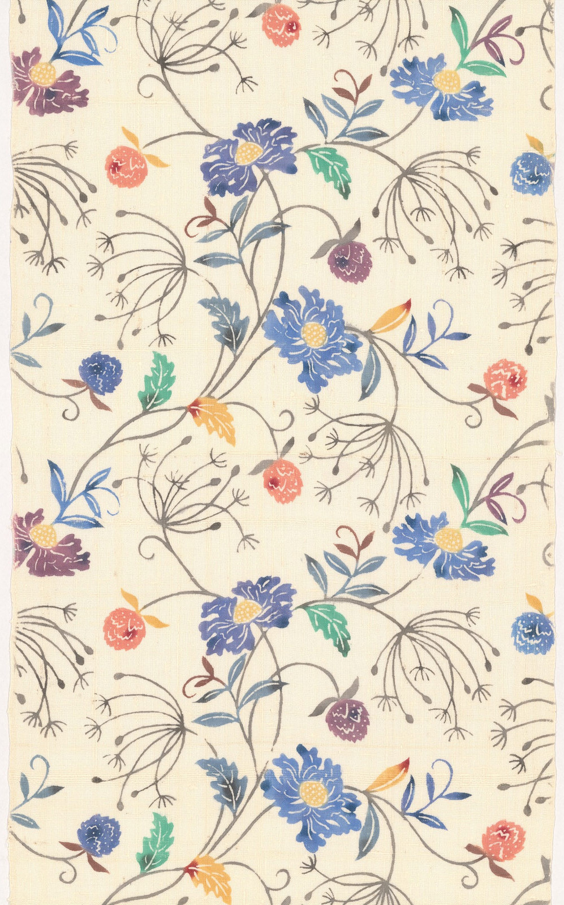
© Koomin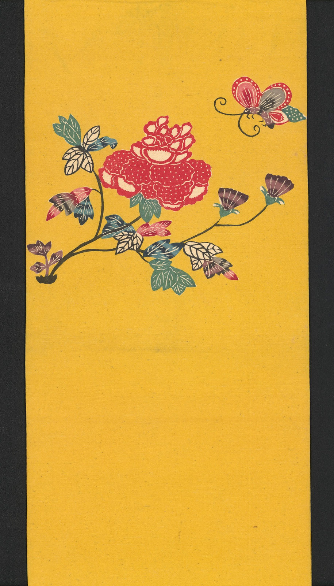
© Koomin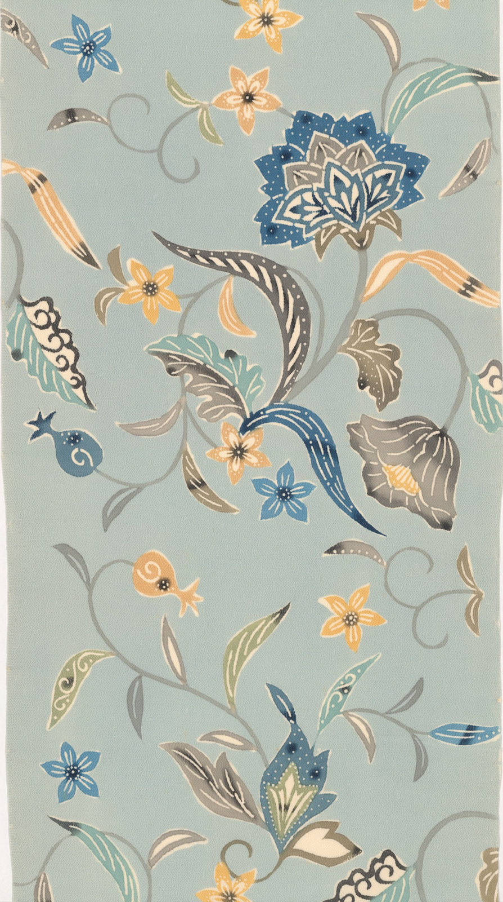
© Koomin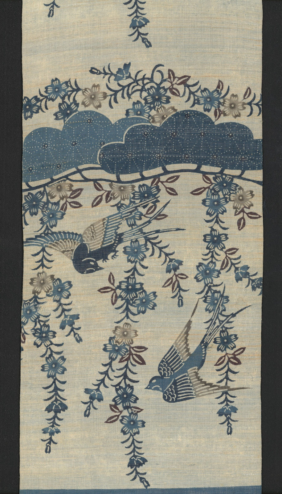
© Koomin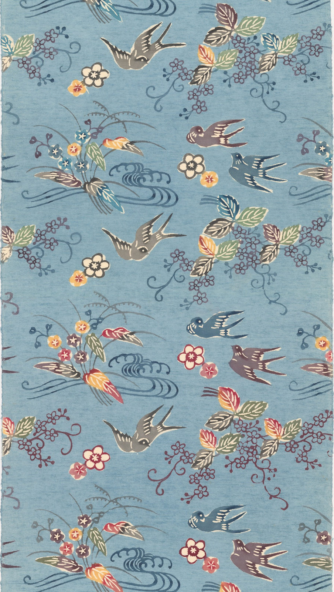
© Koomin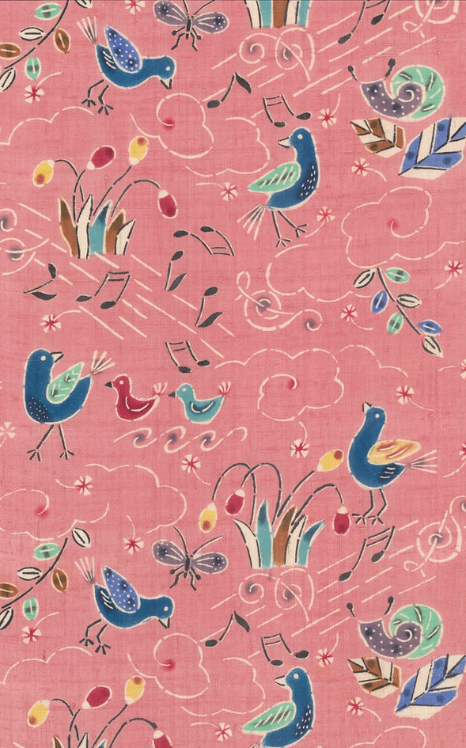
© Koomin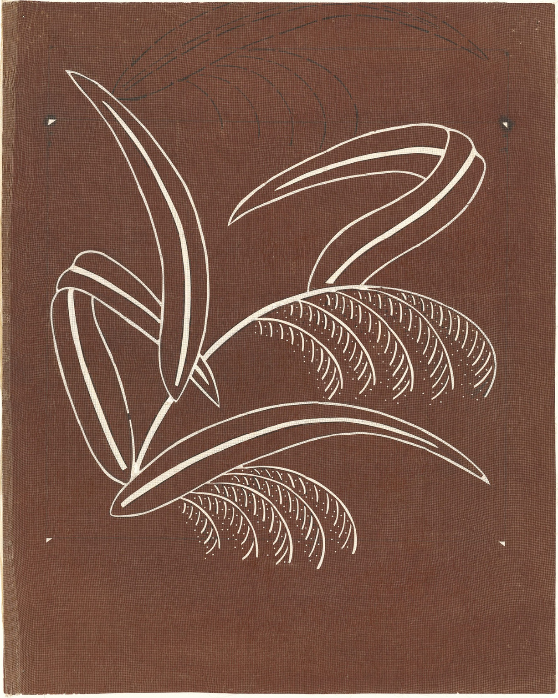
© Koomin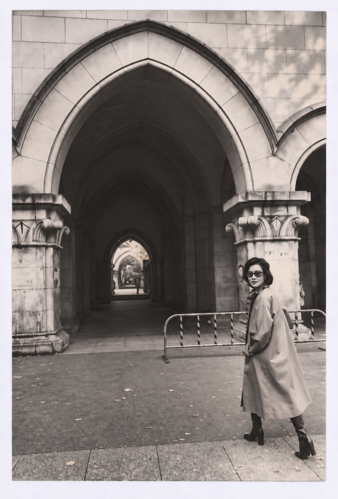
西片玖美子（1946–2021）略歴 1946年 東京都に生まれる。「板締め」から染色を始める 桜蔭学園高等学校在学中、日本民藝館で芹沢銈介の作品に出会う 早稲田大学第一文学部美術専修に進学。在学中、芹沢銈介に師事した村上元彦に型染を学ぶ 1969年 卒業論文「琉球紅型文様に於ける日本染織の影響について」。卒業後、アメリカ統治下の沖縄へ渡り、首里の金城昌太郎の紅型工房で約1年間学ぶ その後、祝まなに学ぶ。また高田装束研究所の高田倭男のもとで装束を学び、皇室の十二単や能衣裳の制作・復元に携わる 1974年 徳島県で藍染を研究。のちに自宅アトリエに藍甕を設える 着物、帯、のれん、屏風、掛軸の制作から、本の装丁、グリーティングカード、簪、ネクタイなどのデザインまで、幅広く手がける
1946 Born in Tokyo. Began exploring textile dyeing through itajime, a traditional clamp-resist dyeing technique.
While attending Oin Senior High School, encountered the work of Keisuke Serizawa at the Japan Folk Crafts Museum.
Went on to study art at Waseda University’s School of Humanities and Social Sciences. During her university years, studied katazome (stencil dyeing) under Motohiko Murakami, a former student of Serizawa.
1969 Graduated with a thesis titled “The Influence of Japanese Textiles on Ryukyuan Bingata Patterns.”
After graduation, traveled to Okinawa, then ruled under U.S. administration, and spent approximately one year studying bingata at the workshop of Shotaro Kinjo in Shuri.
Later studied under Mana Iwai. She also studied traditional court costumes under Shizuo Takada at the Takada Institute of Costume Research, participating in the creation and restoration of jūnihitoe (twelve-layered ceremonial court robes) for the Imperial Family and Noh costumes.
1974 Studied indigo dyeing in Tokushima Prefecture. Later installed an indigo dye vat in her home studio.
Her creative practice encompassed a remarkable range of works, from kimono, obi sashes, noren curtains, folding screens, and hanging scrolls to book covers, greeting cards, kanzashi hair ornaments, and neckties.
謝辞 本プロジェクトの作品目録の作成にあたり、沖縄県立芸術大学芸術文化研究所共同研究員の平田美奈子氏に多大なるご協力をいただきました。また、目録の英語校閲では筧千夏氏にお力添えをいただきました。ここに記して、心より感謝申し上げます。
We would like to express our sincere gratitude to Minako Hirata, Collaborative Researcher at the Research Institute of Arts and Culture, Okinawa Prefectural University of Arts, for her invaluable assistance in compiling the catalogue of works for this project.
We are also deeply grateful to Chinatsu Kakehi for her careful review and editing of the English text of the catalogue.
Their generous support and contributions are gratefully acknowledged.
西片玖美子の作品・文様の商業利用、商品化、出版物への掲載、画像の使用等に関するお問い合わせは、桂舎（KATSULA WORKS）までご連絡ください。
作品のご購入や、オンライン展覧会・デジタルコンテンツ制作に関するご相談も承ります。
For inquiries about the commercial use, reproduction, product development, publication, or licensing of Kumiko Nishikata’s artworks and textile designs, please contact KATSULA WORKS.
We also welcome inquiries about artwork purchases, online exhibitions, and digital content production.
作品目録に記載された情報を掲載しています。作品解説本文は確認後に追加します。
Details are drawn from the artwork catalogue. Interpretive commentary will be added after review.